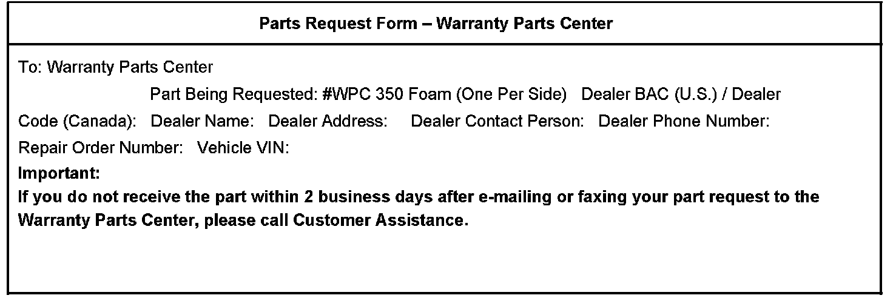

Body - Whistle From Front of Vehicle
Bulletin No.: 06-08-58-003Date: March 28, 2006
TECHNICAL
Subject:
Whistle Noise from Front of Vehicle (Install Foam)
Models:
2007 Cadillac Escalade
Built Prior to VIN Breakpoint 7R136680
Condition
Some customers may comment on a whistle noise from the front end. This noise seems to be coming from the mirror or windshield area and is more noticeable when the vehicle is driven into the wind.
Cause
A gap at the headlamps may be causing the wind whistle.
Correction
Remove the headlamps and install a piece of foam supplied from the Warranty Parts Center. Refer to the illustrations for foam location. Apply the foam to both headlamps at the time of repair.
Parts Information

IMPORTANT NOTE WHEN PRINTING THIS FORM: If the form prints out on two pages, make certain you fax BOTH pages so that the WPC receives all the needed information. Missing information will delay or prevent the part from being shipped.
Warranty Information
For vehicles repaired under warranty, use the table.

Disclaimer